컴퓨터응용선반기능사 (2009-03-29 기출문제)
1과목: 기계재료 및 요소
1. 전동축에 큰 휨(deflection)을 주어서 축의 방향을 자유롭게 바꾸거나 충격을 완화시키기 위하여 사용하는 축은?
- 크랭크 축
- 플렉시블 축
- 차 축
- 직선 축
(정답률: 61%)

2. 변압기용 박판에 사용하는 강으로 가장 적합한 것은?
- 크롬 강
- 망간 강
- 니켈 강
- 규소 강
(정답률: 40%)
3. 축과 보스사이에 2~3곳을 축 방향으로 쪼갠 원뿔을 때려 박아 축과 보스를 헐거움 없이 고정할 수 있는 키는?
- 안장 키
- 접선 키
- 둥근 키
- 원뿔 키
(정답률: 78%)
4. 볼베어링에서 볼을 적당한 간격으로 유지시켜 주는 베어링 부품은?
- 리테이너
- 레이시
- 하우징
- 부시
(정답률: 55%)
5. 피치 4㎜인 3줄 나사를 1회전 시켰을 때의 리드는?
- 6㎜
- 12㎜
- 16㎜
- 18㎜
(정답률: 94%)
6. 냉간가공에 대한 설명으로 올바른 것은?
- 어느 금속이나 모두 상온(20℃) 이하에서 가공함을 말한다.
- 그 금속의 재결정온도 이하에서 가공함을 말한다.
- 그 금속의 공정점보다 10 ~ 20℃ 낮은 온도에서 가공함을 말한다.
- 빙점(0℃) 이하의 낮은 온도에서 가공함을 말한다.
(정답률: 52%)
7. 인장 코일 스프링에 3kg의 하중을 걸었을 때 변위가 30㎜ 이었다면 스프링 상수는 얼마인가?
- 0.1 kgf/㎜
- 0.2 kgf/㎜
- 5 kgf/㎜
- 10 kgf/㎜
(정답률: 51%)
8. 황(S)이 적은 선철을 용해하여 주입 전에 Mg, Ce, Ca 등을 첨가하여 제조한 주철은?
- 펄라이트주철
- 구상흑연주철
- 가단주철
- 강력주철
(정답률: 50%)
9. 비금속 재료에 속하지 않는 것은?
- 합성수지
- 네오프렌
- 도료
- 고속도강
(정답률: 71%)
10. 고정 원판식 코일에 전류를 통하면, 전자력에 의하여 회전원판이 잡아 당겨져 브레이크가 걸리고, 전류를 끊으면 스프링 작용으로 원판이 떨어져 회전을 계속하는 브레이크는?
- 밴드 브레이크
- 디스크 브레이크
- 전자 브레이크
- 블록 브레이크
(정답률: 77%)
11. 평 벨트 전동에 비하여 V벨트 전동의 특징이 아닌 것은?
- 고속운전이 가능하다.
- 바로걸기와 엇걸기 모두 가능하다.
- 미끄럼이 적고 속도비가 크다.
- 접촉 면적이 넓으므로 큰 동력을 전달한다.
(정답률: 71%)
12. 담금질 시 재료와 두께에 따른 내ㆍ외부의 냉각속도가 다르기 때문에 경화된 깊이가 달라져 경도 차이가 생기는데 이를 무엇이라 하는가?
- 질량 효과
- 담금질 균열
- 담금질 시효
- 변형 시효
(정답률: 50%)
13. 구리에 아연을 8 ~ 20% 첨가한 합금으로 α고용체만으로 구성되어 있으므로 냉간가공이 쉽게 되어 단추, 금박, 금 모조품 등으로 사용되는 재료는?
- 톰백(tombac)
- 델타 메탈(delta metal)
- 니켈 실버(nickel silver)
- 문쯔 메탈(muntz metal)
(정답률: 66%)
14. 내연기관의 피스톤 등 자동차 부품으로 많이 쓰이는 Al 합금은?
- 실루민
- 화이트 메탈
- Y 합금
- 두랄루민
(정답률: 51%)
15. 파이프의 연결에서 신축이음을 하는 것은 온도변화에 의해 파이프 내부에 생기는 무엇을 방지하기 위해서인가?
- 열응력
- 전단응력
- 응력집중
- 피로
(정답률: 72%)
2과목: 기계제도(절삭부분)
16. 가공방법 기호 중 선삭가공을 표시한 기호는?
- B
- D
- L
- P
(정답률: 58%)
17. 축의 도시 방법 중 옳은 것은?
- 축은 길이방향으로 온단면 도시한다.
- 축의 끝에는 모따기를 하지 않는다.
- 길이가 긴 축은 중간을 파단하여 짧게 그릴 수 있다.
- 축의 키 홈을 나타낼 경우 국부 투상도로 나타내어서는 안된다.
(정답률: 68%)
18. 절단된 면을 다른 부분과 구분하기 위하여 가는 실선으로 규칙적으로 줄을 늘어 놓은 선들의 명칭은?
- 해칭선
- 피치선
- 파단선
- 기준선
(정답률: 66%)
19. 보기와 같은 단면도의 명칭은?
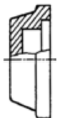
- 온 단면도
- 한쪽 단면도
- 부분 단면도
- 회전 단면도
(정답률: 49%)
20. 보기와 같은 기하공차에 대하여 올바르게 설명된 것은?
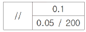
- 구분 구간 200㎜에 대하여 0.⑤㎜, 전체 길이에 대하여는 0.1㎜의 평행도
- 전체 길이 200㎜에 대하여는 0.⑤㎜, 구분 구간은 0.1㎜의 평행도
- 구분 구간 200㎜에 대하여는 0.1㎜, 전체 길이에 대하여는 0.⑤㎜의 평행도
- 전체 길이 200㎜에 대하여는 0.⑤㎜/0.1㎜, 구분 구간에 대하여는 0.⑤㎜의 평행도
(정답률: 45%)
21. 보기와 같은 맞춤핀의 설명으로 올바른 것은?
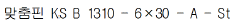
- 호칭 지름 6㎜
- 호칭 길이 10㎜
- 호칭 지름 30㎜
- 호칭 길이 13㎜
(정답률: 56%)
22. ø80 에 대한 H6, H7, H8, h9의 공차가 있을 때, 치수 공차 값이 가장 큰 것은?
- H6
- H7
- H8
- h9
(정답률: 54%)
23. 보기 등각투상도를 화살표 방향으로 투상한 정면도는?
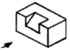
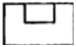
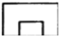
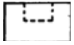
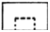
(정답률: 90%)
24. 실제 길이가 120㎜인 것을 척도가 1:2인 도면에 나타내었을 때 치수를 얼마로 기입해야 하는가?
- 30
- 60
- 120
- 240
(정답률: 55%)
25. 관용 테이퍼 수나사를 나타내는 것은?
- M3
- UNC3/8
- R3/4
- TM18
(정답률: 50%)
26. 다듬질 절삭 할 때의 절삭조건으로 적당한 것은?
- 절삭깊이와 이송을 크게 하고 절삭속도를 줄인다.
- 절삭깊이와 이송을 작게 하고 절삭속도를 높인다.
- 절삭깊이와 이송을 작게 하고 절삭속도를 줄인다.
- 절삭깊이와 이송을 크게 하고 절삭속도를 높인다.
(정답률: 70%)
27. 다품종 소량 생산이나 간단한 부품의 수리 및 가공에 사용하는 가장 보편적인 선반은?
- 자동 선반
- 모방 선반
- 터릿 선반
- 보통 선반
(정답률: 57%)
28. 미세하고 비교적 연한 숫돌 입자를 공작물의 표면에 적은 압력으로 접촉시키면서 매끈하고 고정밀도의 표면으로 일감을 다듬는 가공 방법은?
- 호닝
- 슈퍼 피니싱
- 래핑
- 전해 연삭
(정답률: 59%)
29. 내면 연삭기의 내면 연삭 방식이 아닌 것은?
- 보통형
- 센터리스형
- 유성형
- 지지판 위치형
(정답률: 49%)
30. 기계공작은 가공밥법에 따라 절삭 가공과 비절삭 가공으로 나눈다. 다음 중 절삭 가공 방법이 아닌 것은?
- 선삭
- 밀링
- 용접
- 드릴링
(정답률: 88%)
3과목: 기계공작법
31. 밀링 가공에서 하향 절삭의 장점에 대한 설명으로 틀린 것은?
- 커터 날이 공작물을 향하여 누르므로 공작물의 고정이 간편하다.
- 날의 마멸이 적고 수명이 길다.
- 커터의 절삭 방향과 이송 방향이 같으므로 가공면이 깨끗하다.
- 칩이 가공된 면 위에 쌓이지 않으므로 정밀도가 좋다.
(정답률: 56%)
32. 공구의 마멸 형태 중 플랭크 마멸이라고 하며 주철과 같이 메짐이 있는 재료를 절삭할 때 생기는 것은?
- 경사면 마멸
- 여유면 마멸
- 치핑(chipping)
- 공구의 시효 변형
(정답률: 41%)
33. 납, 주석, 알루미늄 등의 연한 금속이나 얇은 판금의 가장자리를 다듬질 할 때 가장 적합한 줄눈의 모양은?
- 단목
- 귀목
- 복목
- 파목
(정답률: 75%)
34. 절삭공구 선단부에서 잔단 응력을 받으며, 항상 미끄럼이 생기면서 절삭작용이 일루어지며 진동이 적고 가공, 가공 표면의 매끄러운 면을 얻을 수 있는 가장 이상적인 칩의 형태는?
- 유동형 칩
- 전단형 칩
- 열단형 칩
- 균열형 칩
(정답률: 79%)
35. 비교 측정용 측정기기에 해당하는 측정기는?
- 측장기
- 투영기
- 마이크로미터
- 다이얼 테스트 인티케이터
(정답률: 52%)
36. 수직 밀링머신에 관한 설명으로 틀린 것은?
- 공구는 주로 정면 밀링 커터와 엔드밀을 사용한다.
- 평면가공이나 홈 가공, T홈 가공, 더브테일 등을 주로 가공한다.
- 주축헤드는 고정형, 상하이동형, 경사형 등이 있다.
- 공구는 아버를 이용하여 고정한다.
(정답률: 48%)
37. 밀링가공에서 테이블의 이송속도가 2880㎜/min, 밀링 커터의 날 수가 12개, 밀링 커터의 회전수가 1200rpm일 때 밀링 커터의 날 1개당 이송은 몇 mm 인가?
- 0.1
- 0.15
- 0.2
- 0.3
(정답률: 51%)
38. 각도 측정에 주로 사용되는 측정기는?
- 사인 바(sine bar)
- 광선 정반(optical flat)
- 하이트 게이지(height gauge)
- 다이얼 게이지(dial gauge)
(정답률: 83%)
39. 기어 절삭 방법에 해당하지 않는 것은?
- 형판을 이용한 방법
- 총형 커터를 이용한 방법
- 복식 공구대를 이용한 방법
- 창성법을 이용한 방법
(정답률: 47%)
40. 공작물 연삭면의 모양에 따라 연삭 가공의 종류를 분류할 경우 해당하지 않는 것은?
- 원통 연삭
- 평면 연삭
- 공구 연삭
- 공작물 연삭
(정답률: 34%)
4과목: CNC공작법 및 안전관리
41. 윤활제가 갖추어야 할 조건에 해당하지 않는 것은?
- 한계 윤활 상태에서 견딜 수 있는 유연성이 있어야 한다.
- 사용 상태에서 충분한 점도를 유지하여야 한다.
- 산화나 열에 대한 안정성이 낮아야 한다.
- 화학적으로 불활성이며 균질하여야 한다.
(정답률: 78%)
42. 선반 바이트의 윗면 경사각에 대한 설명으로 틀린 것은?
- 직접 절삭력에 영향을 준다.
- 공구의 끝과 일감의 마찰을 줄이기 위한 것이다.
- 이 각이 크면 절삭성이 좋다.
- 이 각이 크면 일감 표면이 깨끗하게 다듬어 지지만 날 끝은 약하게 된다.
(정답률: 33%)
43. CNC 프로그램의 구성에 대한 설명 중 틀린 것은?
- 한 블록(Block)에서 워드(Word)의 개수는 제한이 없다.
- 스퀀스(Sequence) 번호는 생략 가능하며 순서에 제한이 없다.
- 한 블록(Block) 내에서 동일 그룹의 워드(Word)를 2개 이상 지령하면 앞에 지령된 워드(Word)가 실행된다.
- 하나의 프로그램은 어드레스(Address) "0___"부터 "M02" 까지 이며 블록(Block)의 개수는 제한이 없다.
(정답률: 44%)
44. 범용공작기계에서 사람의 손, 발이 하는 일을 CNC 공작기계에서는 무엇이 대신 하는가?
- 정보처리 회로
- 서보기구
- 제어부
- 기계본체
(정답률: 70%)
45. A점에서 B점으로 그림과 같이 원호가공하는 프로그램으로 맞는 것은?
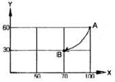
- G90 G02 X70.0 Y30.0 R30.0 ;
- G90 G03 X70.0 Y30.0 R30.0 ;
- G91 G02 X70.0 Y30.0 R30.0 ;
- G91 G03 X70.0 Y30.0 R30.0 ;
(정답률: 46%)
46. 다음과 같은 CNC 선반 프로그램에서 S200의 가장 올바른 의미는?
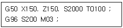
- 주축 회전수 200rpm
- 절삭 속도 200m/min
- 절삭 속도 200㎜/rev
- 주축 최고 회전수 200rpm
(정답률: 49%)
47. CNC 선반 프로그래밍에서 매분 당 150㎜씩 공구의 이송을 나타내는 지령으로 알맞은 것은?
- G98 F150
- G99 F0.15
- G98 F0.15
- G99 F150
(정답률: 49%)
48. CNC 공작기계를 도입함으로써 얻어지는 장점이 아닌 것은?
- 리드 타임의 연장
- 치공구 비용의 절감
- 기계가동률과 생산성 향상
- 사용 기계 대수의 절감
(정답률: 61%)
49. 보조 기능(M기능) 중 주축 정회전을 의미하는 것은?
- M00
- M01
- M02
- M03
(정답률: 65%)
50. CAD/CAM 가공을 하기 위한 일반적인 순서로 알맞은 것은?(일부 컴퓨터에 보기의 특수 문자가 보이지 않아서 괄호안에 다시 표기하여 둡니다.)
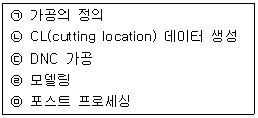
- (ㄱ) → (ㄴ) → (ㄷ) → (ㄹ) → (ㅁ)(ㄱ→ㄴ→ㄷ→ㄹ→ㅁ)
- (ㄹ) → (ㄱ) → (ㄴ) → (ㅁ) → (ㄷ)(ㄹ→ㄱ→ㄴ→ㅁ→ㄷ)
- (ㅁ) → (ㄷ) → (ㄴ) → (ㄱ) → (ㄹ)(ㅁ→ㄷ→ㄴ→ㄱ→ㄹ)
- (ㄹ) → (ㄱ) → (ㅁ) → (ㄷ) → (ㄴ)(ㄹ→ㄱ→ㅁ→ㄷ→ㄴ)
(정답률: 62%)
51. CNC 기계가공 중에 지켜야 할 안전 및 유의사항으로 틀린 것은?
- CNC선반 작업 중에는 문을 닫는다.
- 머시닝센터에서 공작물은 가능한 깊게 고정한다.
- 머시닝센터에서 엔드밀은 되도록 길게 나오도록 고정한다.
- 항상 비상 정지 버튼은 위치를 확인한다.
(정답률: 85%)
52. CNC 공작기계에서 사용되는 좌표치의 기준으로 사용하는 좌표계가 아닌 것은?
- 기계 좌표계
- 공작물 좌표계
- 구역 좌표계
- 원통 좌표계
(정답률: 52%)
53. CNC 선반의 반자동(MDI) 모드에서 실행하였을 경우 경보(alarm)가 발생하는 블록은?
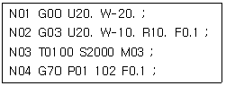
- N01
- N02
- N03
- N04
(정답률: 48%)
54. 머시닝센터에서 공구 보정기능에 대한 설명으로 틀린 것은?
- G40 : 공구 지름 보정 취소
- G41 : 공구 지름 좌측 보정
- G44 : (+) 방향 공구 길이 보정
- G49 : 공구 길이 보정 취소
(정답률: 66%)
55. 600rpm으로 회전하는 스핀들에서 5회전 일시정지(dwell)를 주려고 한다. CNC 프로그램으로 맞는 것은?
- G04 P0.5 ;
- G04 X1.0 ;
- G04 X5.0 ;
- G04 X0.5 ;
(정답률: 35%)
56. 선반 외경용 ISO 툴 홀도의 규격이다. 밑줄친 S가 의미하는 것은?
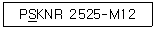
- 인서트 형상
- 클램핑 방식
- 인서트 여유각
- 홀더의 형상
(정답률: 46%)
57. 선반 작업시 안전 사항으로 올바르지 못한 것은?
- 칩이나 절삭유의 비산 방지를 위하여 플라스틱 덮개를 부착한다.
- 절삭 가공을 할 때에는 반드시 보호안경을 착용하여 눈을 보호한다.
- 절삭 작업을 할 때에는 칩에 손을 베이지 않도록 장갑을 착용한다.
- 척이 회전하는 도중에 일감이 튀어나오지 않도록 확실히 고정한다.
(정답률: 86%)
58. 다음 그림에서 (ㄱ)에서 (ㄴ)까지 직선 가공하는 CNC 선반 프로그램으로 맞는 것은?
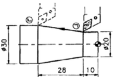
- G01 X10. Z-28. F0.2 ;
- G01 U5. W-28. F0.2 ;
- G01 X30. Z-38. F0.2 ;
- G01 U10. W-38. F0.2 ;
(정답률: 49%)
59. 머시닝센터 프로그래밍에서 고정 사이클 취소 기능을 하는 G코드는?
- G80
- G81
- G82
- G83
(정답률: 69%)
60. CNC 선반 프로그래밍에서 G76 기능을 다음과 같이 한블록으로 지령할 때 "k"의 의미는?
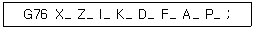
- 나사산 높이로 직경 지령이다.
- 나사산 높이로 반지름 지령이다.
- 첫 번째 절입량으로 직경 지름이다.
- 첫 번째 절입량으로 반지름 지령이다.
(정답률: 29%)